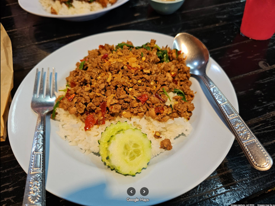
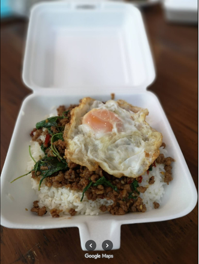
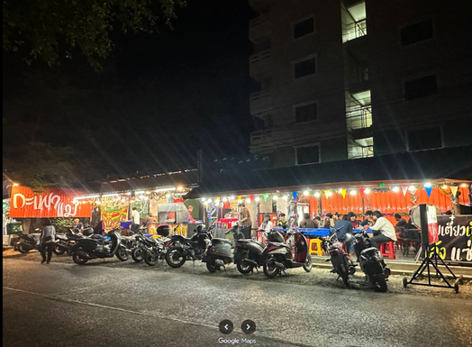
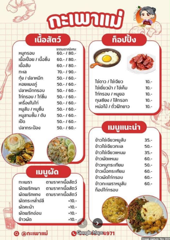
หน้าหอ ลากูนแมนชั่น คลองหก
ดูใน Google Maps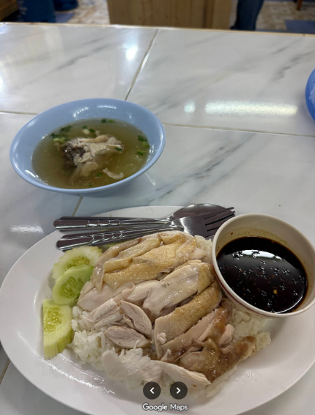
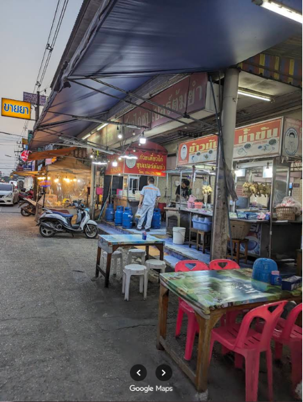
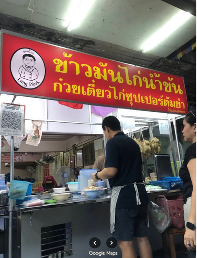
ซอยพรธิสาร 3 คลองหก
ดูใน Google Maps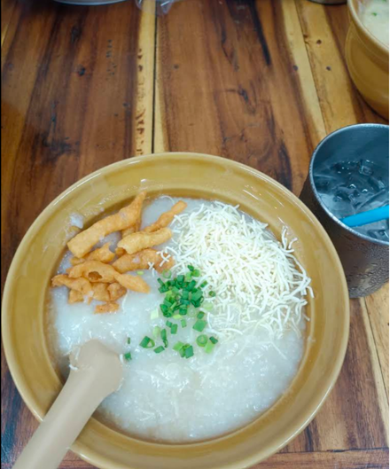
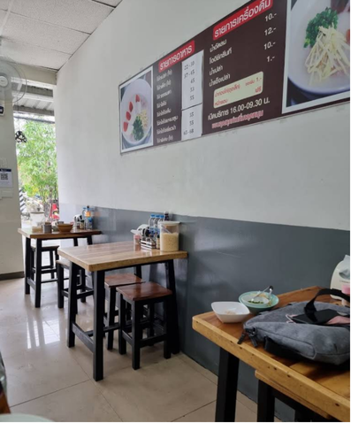
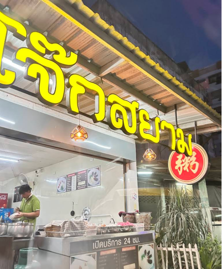
ตรงข้ามสะพานสูง ฝั่งเลียบคลอง คลองหก
ดูใน Google Maps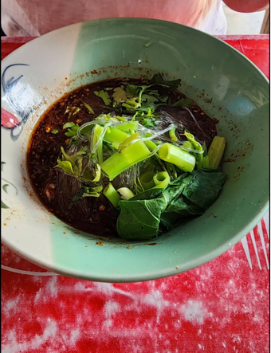
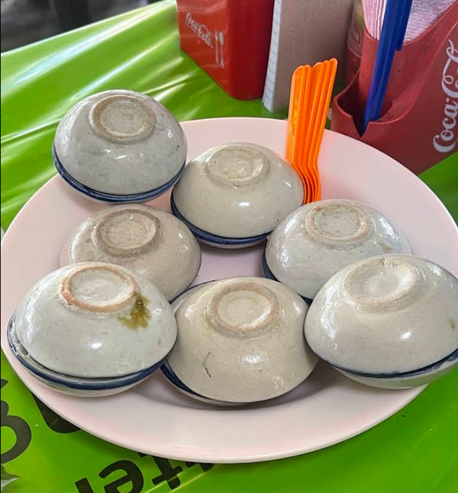
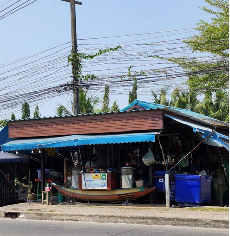
ตรงข้ามซอยอีสเทิร์น คลองหก
ดูใน Google Maps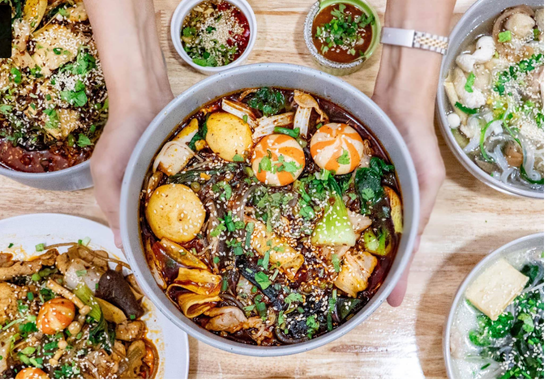
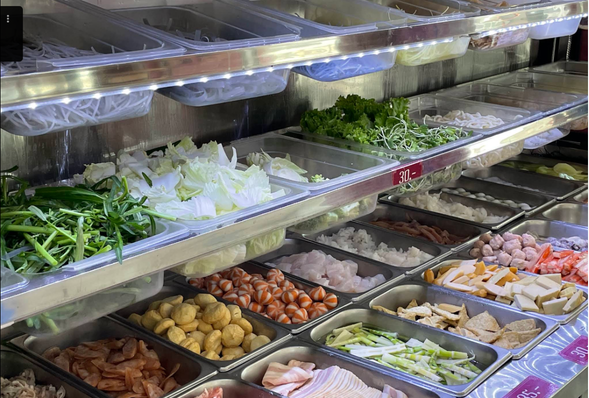
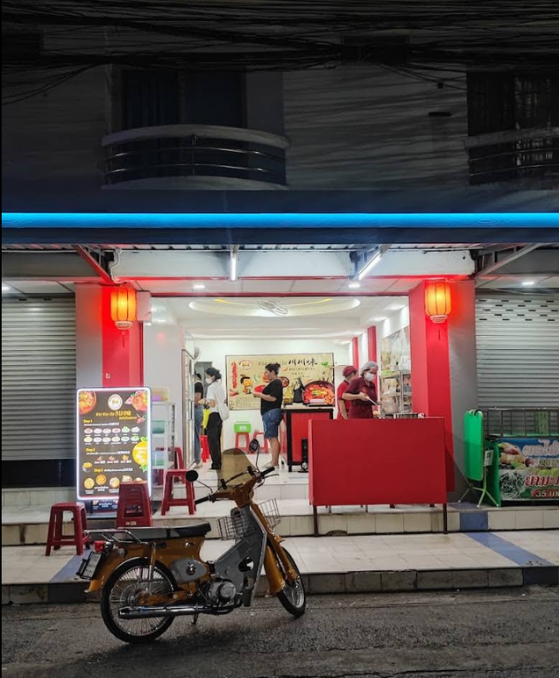
ซอยอีสเทิร์น คลองหก
ดูใน Google Maps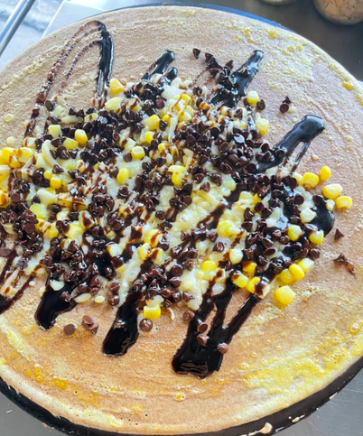
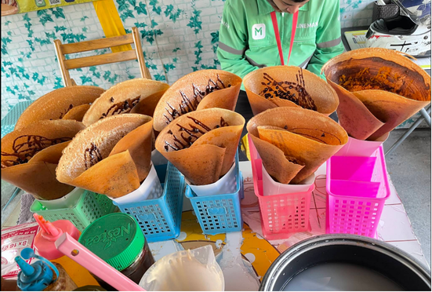
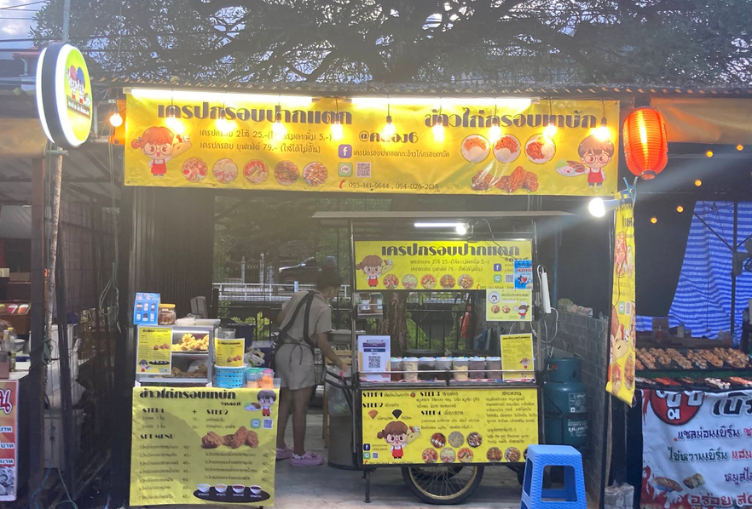
ซอยตะวันออก 6 ริมคลอง คลองหก
ดูใน Google Maps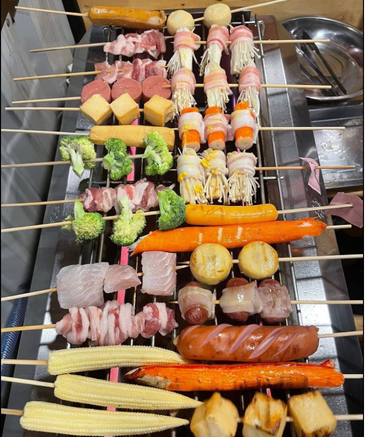
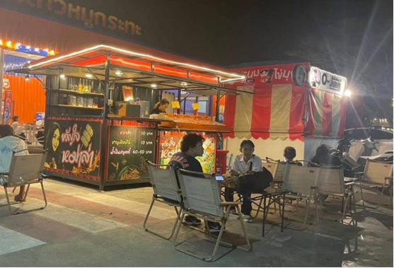
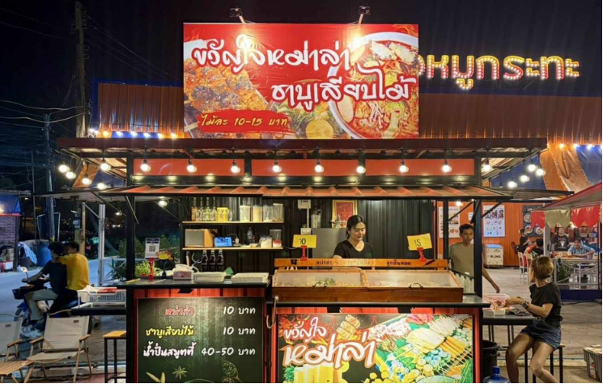
เลียบคลอง คลองหก
ดูใน Google Maps